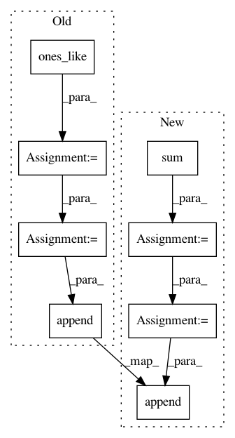

d1f4a9f474c547b099aa67619f7ba035a9f8ffbc,scripts/detection/ssd/train_ssd.py,,train,#Any#Any#Any#Any#Any#,95
Before Change
anchors, cls_preds, gt_boxes, gt_ids)
num_positive.append(nd.sum(box_masks >= 0).asscalar())
valid_cls = nd.sum(cls_targets >= 0, axis=0, exclude=True)
valid_cls = nd.maximum(valid_cls, nd.ones_like(valid_cls))
valid_box = nd.sum(box_masks > 0, axis=0, exclude=True)
l1 = cls_loss(cls_preds, cls_targets, (cls_targets >= 0).expand_dims(axis=-1))
// losses3.append(l1 * cls_targets.size / cls_targets.shape[0])
l1 = l1 / valid_cls * cls_targets.shape[-1]
l2 = box_loss(box_preds * box_masks, box_targets)
// losses4.append(l2 * box_targets.size / box_targets.shape[0])
l2 = l2 / valid_cls * box_targets.size / box_targets.shape[0]
L = l1 + l2
Ls.append(L)
outputs.append(cls_preds)
labels.append(cls_targets)
box_outputs.append(box_preds * box_masks)
box_labels.append(box_targets)
After Change
box_labels.append(box_targets)
// losses1.append(l1)
// losses2.append(l2)
n_pos = max(1, sum(num_positive))
for l3, l4 in zip(losses3, losses4):
L = l3 / n_pos + l4 / n_pos
Ls.append(L)
losses1.append(l3 / n_pos)
losses2.append(l4 / n_pos)
autograd.backward(Ls)
batch_size = batch[0].shape[0]
In pattern: SUPERPATTERN
Frequency: 3
Non-data size: 8
Instances
Project Name: dmlc/gluon-cv
Commit Name: d1f4a9f474c547b099aa67619f7ba035a9f8ffbc
Time: 2018-04-07
Author: cheungchih@gmail.com
File Name: scripts/detection/ssd/train_ssd.py
Class Name:
Method Name: train
Project Name: keras-team/keras
Commit Name: 45a10bc6d708fade197a37bfbc62312caf70e6a7
Time: 2017-02-17
Author: francois.chollet@gmail.com
File Name: keras/layers/convolutional_recurrent.py
Class Name: ConvLSTM2D
Method Name: get_constants
Project Name: dmlc/gluon-cv
Commit Name: 74475cddbe3defe8be72abd1d98940475809646d
Time: 2018-04-09
Author: cheungchih@gmail.com
File Name: scripts/detection/ssd/train_ssd.py
Class Name:
Method Name: train